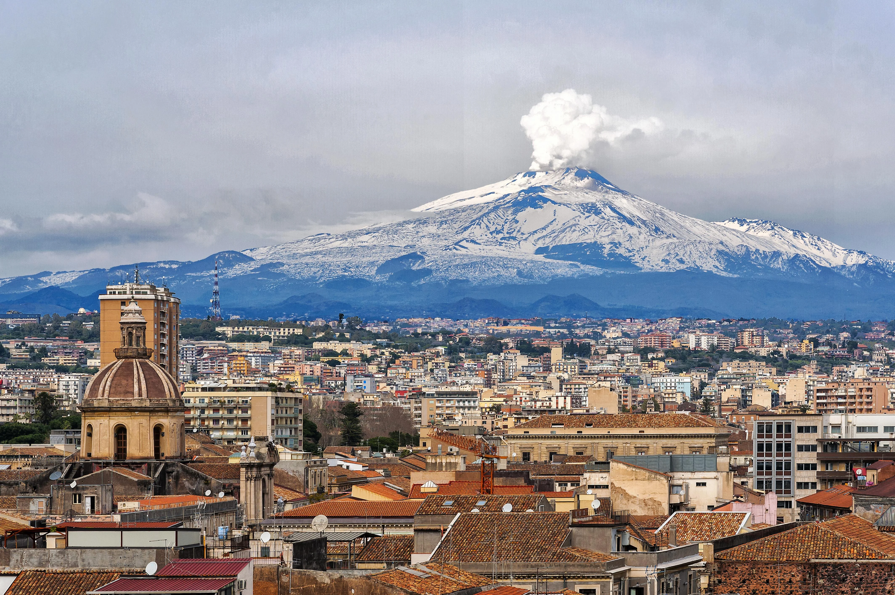
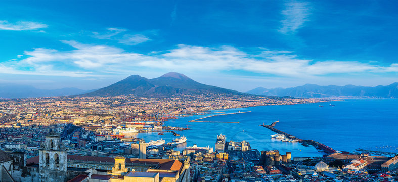

VESUVIO
Campania
Vicino Napoli, è un vulcano esplosivo e considerato tra i più pericolosi al mondo.
Scopri
STROMBOLI
Sicilia
Nelle Isole Eolie, è noto per le sue esplosioni chiamate "esplosioni stromboliane".
Scopri


CAMPI FLEGREI
Campania
Grande area vulcanica vicino Napoli, caratterizzata da fenomeni di bradisismo.
Scopri